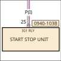
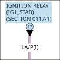
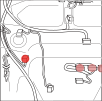

GENERAL INFORMATION - EWD -
Please access each content from the menu at the top.
This Electronic Wiring Diagram (EWD) has been developed to be used directly in the service area.It contains functions that maximize the interactive capabilities in order to insure that repairs can be performed quickly and accurately.
Features
1. Circuit diagram where connection is not divided
2. Wire colors are shown in their actual color
3. Animated images of major flows of electricity
4. Highlighted display of related parts for each DTC
Quick guide
Quick guide - EWD -
Introduction of the key features
Button functions
NEW WINDOW
Display in full screen. Display the EWD screens separately.
RELOAD
Read the circuit diagram again in the initial state.
TERMINAL VOLTAGE
Open the relevant terminal voltage table (workshop manual). It can not be used when the button is gray.
GENERAL INFORMATION
This page opens.
POWER FLOW
Open content Remarks how a current flows in the circuit diagram.It can not be used when the button is gray.
DATA LINK CONNECTOR
Open the DATA LINK CONNECTOR section.
ELECTRICAL WIRING SCHEMATIC
Open the ELECTRICAL WIRING SCHEMATIC section.
FUSE BOX
Open the FUSE BOX section.
GROUND POINT
Open the GROUND POINT section.
ALL PRINT
Print the circuit diagram, connector diagram and location diagram in a set.
PARTIAL PRINT
You can print only connectors, only circuit diagrams or location diagram. Use the button of the required area.
CIRCUIT USING THIS CONNECTOR
You can move from the list of "CIRCUIT USING THIS CONNECTOR" to another circuit diagram.
CONNECTOR HARNESS SIDE VIEW
The connector shape seen from the harness side is displayed. The wire color of the harness can be confirmed. Switch to module side by button selection.
CONNECTOR MODULE SIDE VIEW
The connector shape seen from the module side is displayed. The size of the terminal can be confirmed. Switch to harness side by button selection.
CONNECTOR MULTIPLE SELECTION MODE ON
CONNECTOR MULTIPLE SELECTION MODE OFF
When ON button, multiple connectors can be selected simultaneously. ON and OFF is switched by pressing the button.
SWITCH DISPLAY AREA
It is possible to change three frames. See the information you want to check on a wide screen.
INDEX TAB
INDEX TAB AT THE LEFT
When you select the Index tab, the connector list is displayed. When you select from the connector list, the circuit diagram, the connector diagram, and the location map will be displayed in conjunction. In the circuit diagram, it is displayed centrally on the selected connector.
LINK SETTING
LINK SETTING ON THE CIRCUIT DIAGRAM

When you select the orange part, information on the connector diagram and the location diagram is displayed.

You can move to another section by selecting a light blue part.
LINK SETTING ON THE LOCATION DIAGRAM

This is the connector where the highlighted part in the dark color is selected.
Information on the connector selected by selecting a pale color highlight will be displayed.
LINK SETTING ON THE CONNECTOR DIAGRAM
Display a list of sections that use the same connector. You can move to any section.